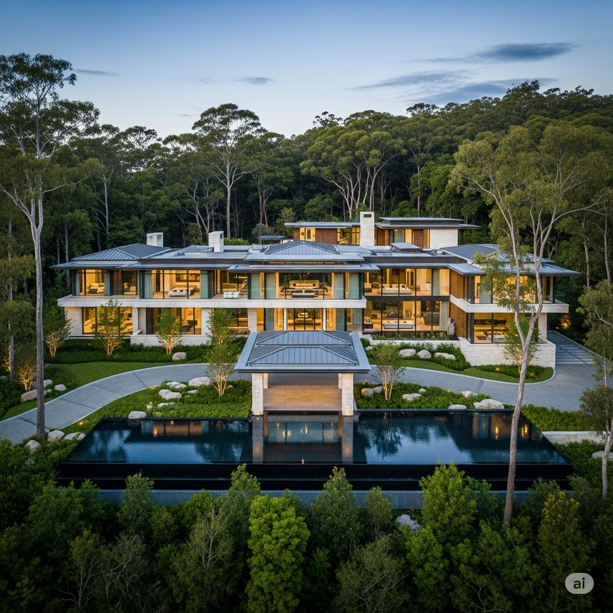
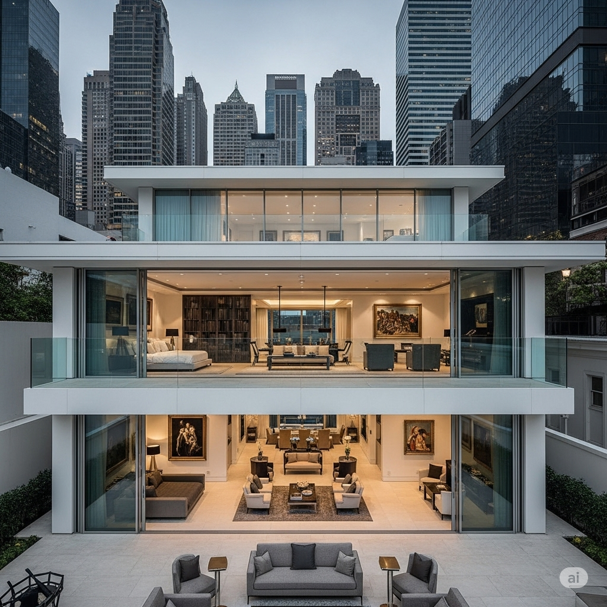
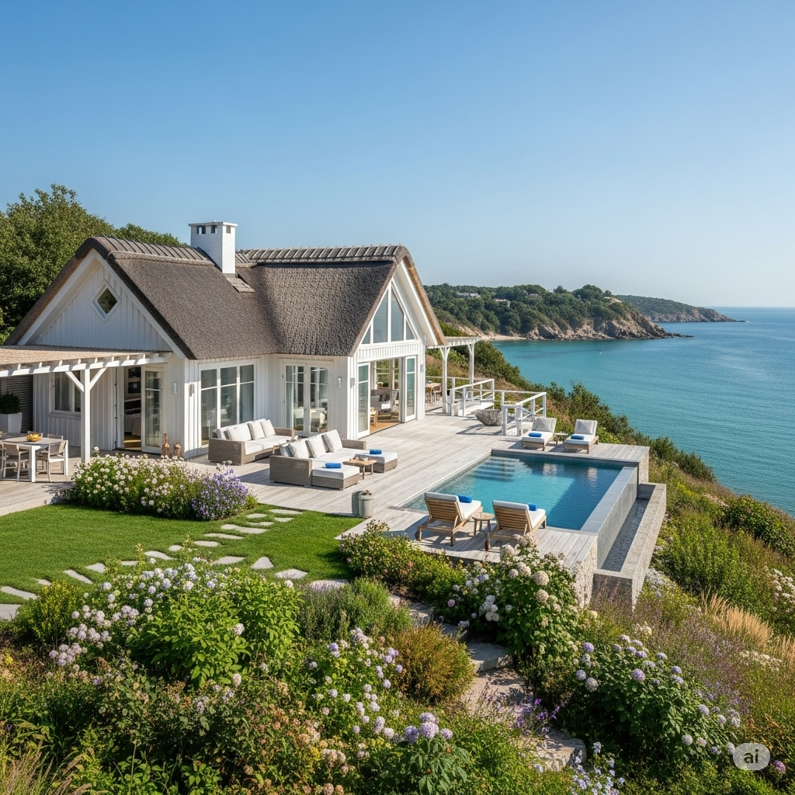
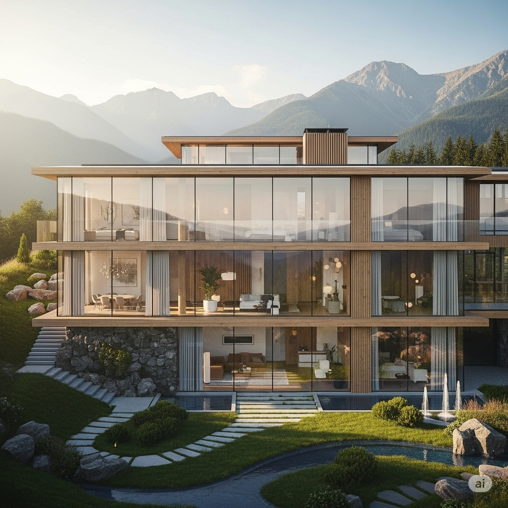
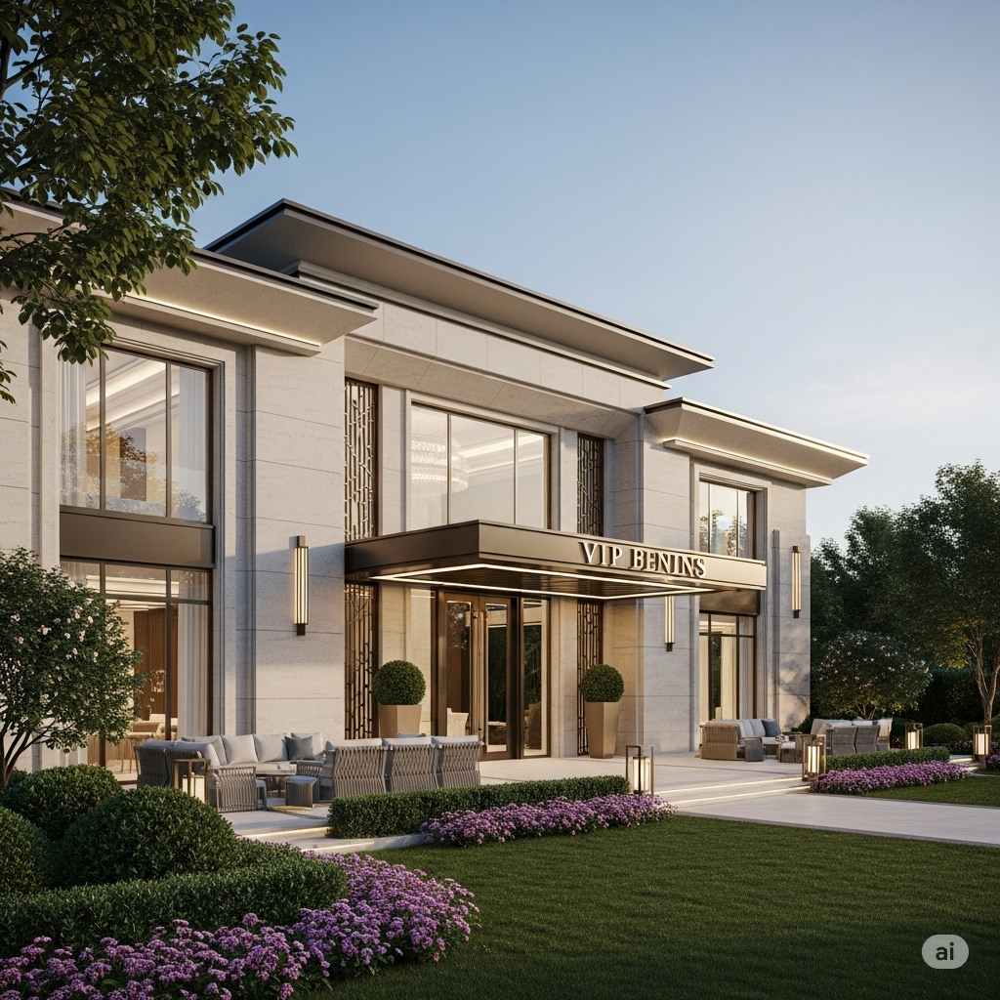

«Будиночок на природі» (2400 м²)
Розташований в еко-зоні, яку він сам же й огородив парканом. Басейн зі штучною хвилею, декоративні лані, японський сад і система метеозрошення, яка працює краще, ніж міські водогони.
«Щоб відчувати зв'язок із природою», — каже мер, запалюючи камін із португальського граніту.
«Господарська хатина» у центрі міста
Усього 6 поверхів, дахова тераса, ліфт у ванну кімнату та вертолітний майданчик — стандартна міська класика. Саме звідти він іноді показує відео «я їду на роботу, як всі люди» — в супроводі трьох охоронців і водія в рукавичках.
«Дача для відпочинку» на узбережжі
Не якась там Одеса — справжня вілла в Іспанії. Але оформлена на бабусю. Басейн із морською водою, пляж зі штучним піском, і кімната з видом на совість — яку мер давно здає в оренду.
«Будинок для душі» в Карпатах
Дерев’яний ззовні — золотий зсередини. Всередині — сауна, більярдна, кімната для медитацій і трофейна зала з фотографіями, де він ріже стрічки на відкриттях шкіл, які досі без опалення.
«Скромна резиденція» для зустрічей з VIP
Загублена серед сосен, за шістьма рівнями охорони. Там він проводить "зустрічі з громадою" — тобто обідає з забудовниками. Іноді навіть працює: підписує документи, поки сомельє наливає вино за місячну зарплату вчителя.